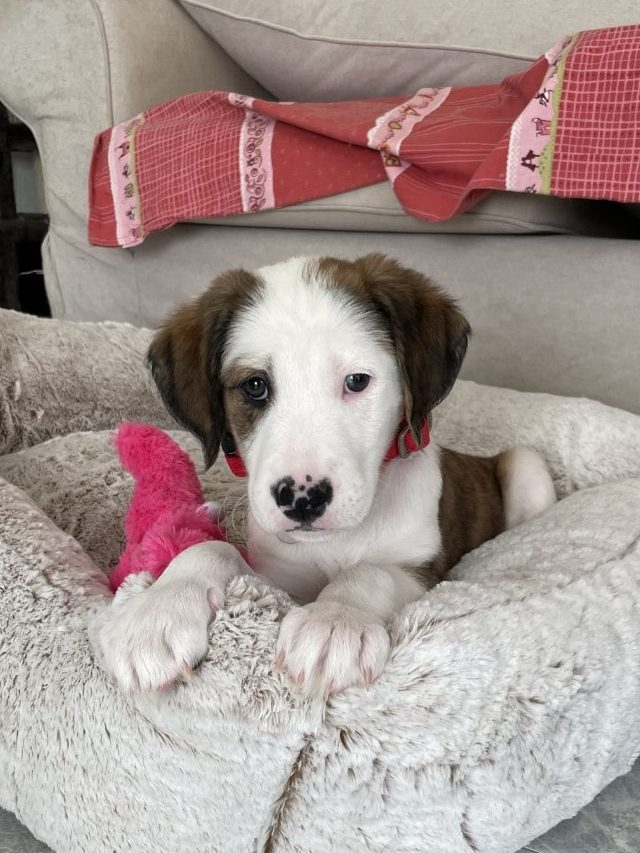
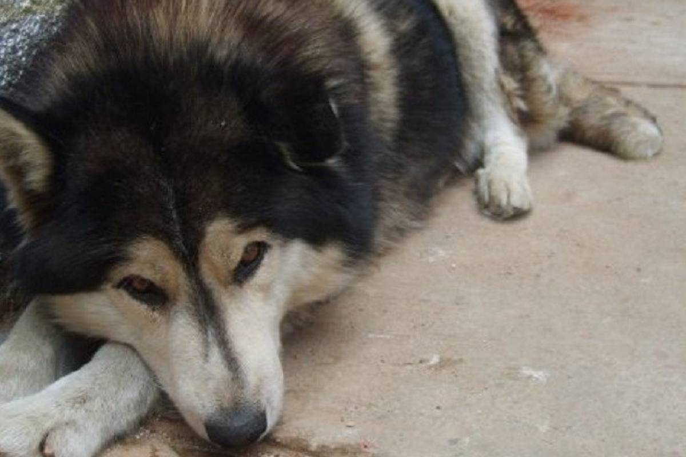

Historias de Éxito del Albergue
Descubre cómo nuestras adopciones han cambiado vidas
Luz
Mayra fue con su perrito “Duque” a la tienda y le dejó que él escogiera a su hermanita, y es que Duque y Luz se tumbaron juntos y supieron que ella era quién debía irse a casa con ellos. La conexión entre Duque y Luz fue instantánea, como si supieran desde el primer instante que estaban destinados a ser familia. 
Así comenzó la aventura de Luz en el hogar de Mayra. Con cada día que pasaba, la pequeña Luz tejía lazos más fuertes con su nueva familia. Era ella la piececita del puzzle que faltaba, y ahora la casa está llena de risas, travesuras y una calidez que solo los peludos pueden traer.
Loba
La encontraron en un estado muy crítico, realmente era muy difícil pensar que podía salvarse, padecía de sarna, desnutrición extrema entre otras infecciones, Pero con ayuda de buenas personas y las ganas de vivir de esta hermosa perrita pudo vencer a la muerte.
Después de unos cuantos meses de su recuperación Fue adoptada por una familia y está feliz y corriendo por el jardín con otros perros.